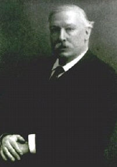

|  |
Sturge-Weber syndrome = a congenital disorder characterised by port-wine stain of the face with mental retardation and epilepsy. There is a high incidence of glaucoma due to raised episcleral pressure.
Born in 1850 in Bristol, England, William Allen Sturge was the eldest son of William Sturge and his wife, Charlotte. His father was a wealthy land surveyor. William's parents were members of the Religious Society of Friends (Quakers).
He attended local schools until 1865 when he was sent to a Quaker school in London. There, while playing soccer, he injured his knees. He stayed with his uncle while he was recuperating from the knee injury. His uncle, a physician, had sons studying medicine. It was during this stay that William developed an interest in medicine. William's interest in medicine was contrary to his father's wishes; wanting instead that his son take up the family business. William's father relented and allowed him to pursue his interest in medicine.
William entered Bristol Medical School in 1868 to study for the Preliminary Scientific Examination of the London M.B. degree. During this time he did practical work at Bristol General Hospital. He was a very industrious young man who, in the pursuit of his interests, neglected his own health. He fell ill of diphtheria in June, 1869. In August, after recovering from the illness, William went on vacation in Switzerland with his family. While there he developed rheumatic fever, an illness that lasted for several weeks. After recovering, William resumed his studies and passed the Primary Examination of the College of Surgeons in 1870. He went to London in 1871 to continue his studies at University College. He had a second attack of rheumatic fever in 1872 which forced him to take a prolonged rest. His father sent him on a tour in the East in 1873. As a medical attendant, William accompanied a wealthy young man named Lukas to Egypt. After returning from Egypt he resumed his medical studies and completed his M.D. (London) in 1875.
After holding the post of Physician's Assistant, he became a resident
Medical Officer and subsequently Registrar of the National Hospital
for Paralysis and Epilepsy. It was there that he laid the foundation of
a wide and thoughtful survey of neurological diseases. The years 1876 and
1877 were spent in Paris on his post-graduate studies. During this period,
neurologists from all over were attracted to the work of Charcot in a clinic
in Salpetriere. William did not limit his studies to neurology. He worked
in general pathology and in medicine and
followed closely the practice of Fornier. Both Charcot and Fornier
wee highly impressed with William's intelligence and originality. It was
in Paris that he met his wife, Emily Bovell, who was also a physician.
They married in September 1877 and returned to London to set up a practice
together. He was appointed physician and pathologist to the Royal Free
Hospital, and a lecturer to the Women's Medical School.
It may be of interest to note that Emily Bovell was one of the original
half dozen women who gained admission to the Medical School of Edinburgh
University, only to be physically ejected by the male students and
faculty. All of these women eventually completed their medical training
elsewhere and all achieved distinction in their own particular field. Emily
was older than William. She developed tuberculosis, a circumstance that
prompted the couple to move to Nice in France (French Riviera) in order
to live in a milder climate. There they set up practice
treating the wealthy and famous English and American visitors. During
this time he took medical care of Queen Victoria and her family. In recognition
of this service, Queen Victoria awarded him gifts and an MVO, which is
an order and decoration reserved for people who have rendered service to
the Royal Family of a personal nature. William stayed in Nice for 27 years.
Emily Bovell died in her early 40's in 1885.
The following year William married Julia Sherriff, who was his nurse in Nice. Julia was the daughter of a wealthy iron master in the North of England. Because of the summer heat in Nice, the couple used to take their vacations at this time of the year. William was very fond of travelling. It was during his travels that he became greatly interested in archaeology and began to collect Greek vases and Paleolithic and Neolithic flint implements. After his retirement in 1907, William returned to England and settled at Icklingham Hall, Suffolk, and are that contained many Neolithic flints which satisfied his passion for archaeology. In the winter of 1918 he suffered from influenza and then nephritis and subsequently died in March 1919. William left no children to bear his name.
Sturge’s name is associated with the widely known syndrome - Sturge-Weber syndrome. In 1879, he described the case of a patient whom he originally saw at the age of 6 ½ years. This child had enjoyed good health until she was 6 months old. At this age she started to have twitching on left side of her body. Later the attacks became stronger but the child would not lose consciousness. With time the twitching started to spread to the other side and she would lose consciousness. She benefited from potassium bromide. Of particular interest was that the child had what was described as "mother s mark" on the right side of the head and face. The skin lesion was accurately demarcated in the midline and involved the upper lip, nose, forehead, scalp, and back of the neck extending a little beyond the midline on the chin and on the upper part of the sternum. It extended as low as the third or fourth dorsal vertebra behind and the second costal cartilage in front. The lips, gums, tongue, roof of mouth, floor of mouth, uvula, and pharynx were all similarly affected, to a greater or less extent, on the right side. The right eye was larger (buphthalmus; congenital glaucoma) and the sclera, choroid and retina were all affected by a vascular malformation. In addition there was a patch about the size of the palm of the hand over the left eye, frontal and temporal regions.
The mark was of a deep purple color, the color partially disappearing
on firm pressure. The affected parts were distinctly larger than the corresponding
parts on the other side. This mark was termed as "port-wine" by him. Sturge
had no proof (for which he was greatly criticized by his peers when he
presented his case to the Clinical Society in London in April 18, 1879)
but he postulated that the patient’s neurological deficit was explained
by a lesion that existed on the surface of the same side of the brain.
The reason he did not suspect that the lesion could have arisen from the
brain parenchyma itself was that, in his view, had there been a parenchymal.
lesion to begin with the patient would have started with generalized seizures
from the beginning since the immature brain
has great "instability of grey matter" and thus allows for widespread
dissemination of the "nerve-discharge". It is a great tribute to Sturge
that he had such an incisive intellect to correctly postulate the underlying
basis of the patient s disease. It was not until 1901 that S. Kalischer
provided a pathological proof of such an association. The radiographic
findings of such a condition were first described by F. Parkes Weber of
England in 1922 and then by V. Dimitri of Argentina in 1923. It should
be noted that Sturge contributed greatly toward the understanding
of muscular diseases in recognition of which he was awarded a silver medal
by the Royal Society of Medicine for his dissertation on Spinal Muscular
Atrophy.
It is of great interest that Drs. Sturge and Weber had common interest not only in medicine but also in extra-curricular pursuits. Both had immense interest in antiquities. It was during his sojourn in the South of France that Sturge started a collection of Greek Amphora that are now housed in the Toronto Museum (Canada) as the Sturge Collection. After his return to England, he lived in Suffolk where he amassed an impressive collection of early prehistoric flint implements that are now housed in the British Museum.